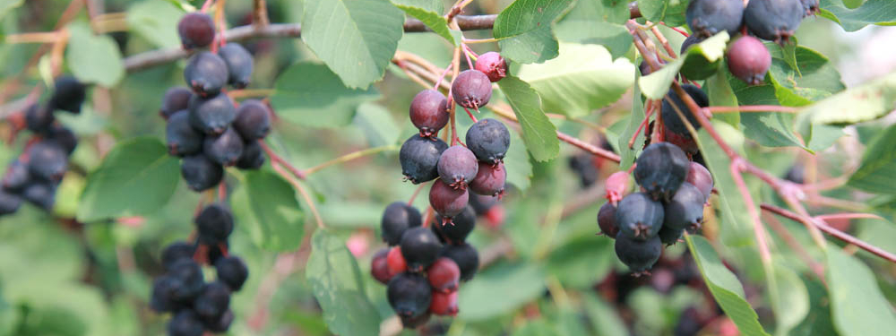

Nasza oferta
nasze wspaniałe sadzonki

Twoja przyszła hodowla

Świdośliwa olcholistna 'Thiessen'
Świdośliwa olcholistna 'Thiessen' to odmiana, która rośnie silnie i dorasta do 4 m wysokości. Pokrój zwarty i wysoki. Otrzymana w North Saskatchewan River, w prowincji Saskatchewan. Wprowadzona do uprawy w 1976 roku. Jest to druga pod względem popularności odmiana w Kanadzie. Polecana również do uprawy amatorskiej.
Świdośliwa olcholistna 'Smoky'
Świdośliwa olcholistna 'Smoky' to najsłodsza i jednocześnie najobficiej plonująca odmiana - do 6,000 kg/ha. Owoce niebieskoczarne, sporej wielkości. Może owocować przez 70 lat. Dorasta do 4,5 m wysokości. Początkowo pokrój wyprostowany, z czasem z tendencją do rozkrzewiania się na boki (do 6 m).
Winorośla
Winorośl można uprawiać nawet w mniej sprzyjających warunkach klimatycznych. Przy ścianie skierowanej na południe, południowy wschód lub południowy zachód, bardzo dobrze owocują odmiany wcześnie dojrzewające, odporne na mróz i choroby grzybowe. Młode rośliny w pojemnikach można sadzić w ogrodzie niemal przez cały rok, oczywiście poza okresami mrozu.